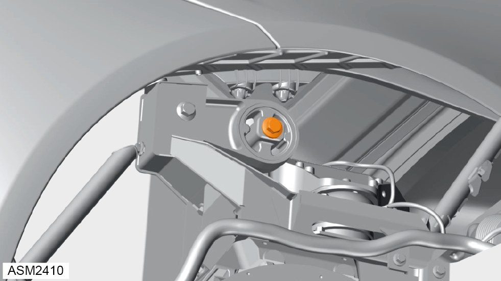
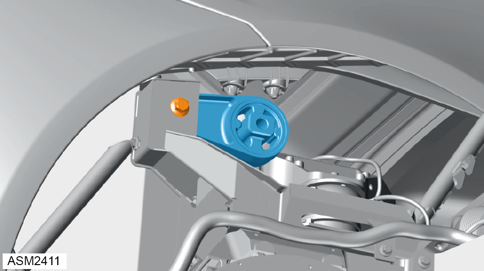

Torque Rod - Upper Engine Mount - Right Side - 4 Cylinder
Print
Operation Code: 40.01.09-02
Removal
- Remove engine cover. Refer to procedure.
- Remove right side rear wheelarch liner.
- Using a suitable tool, support engine.

- Remove M12x90 bolt securing torque rod to engine mount bracket.

- Remove M12x70 bolt securing torque rod to rear subframe.
- Remove torque rod.
Installation
- Installation is the reverse of removal procedure.